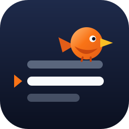
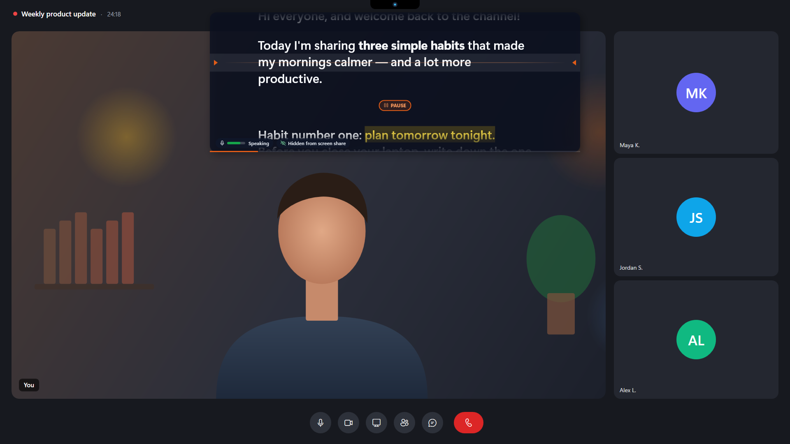
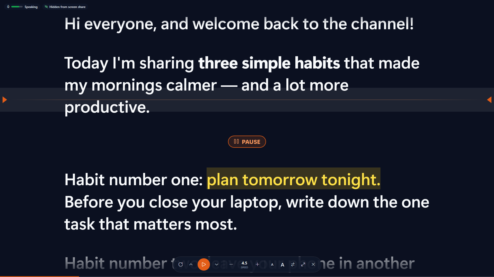
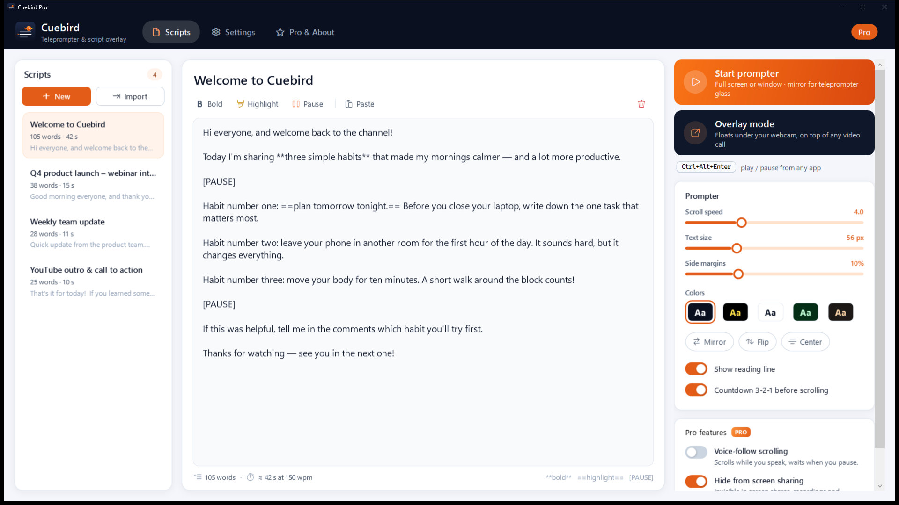

Cuebird Teleprompter
Read your script right under the webcam — on video calls, recordings and live streams.
Máy nhắc chữ cho Windows: đọc kịch bản ngay dưới webcam khi gọi video, quay phim, livestream.
Get it free from the Microsoft Store

Overlay for video calls
A borderless, semi-transparent prompter that stays on top, right under your webcam. Turn on click-through and keep using Zoom, Teams or Meet underneath.
Hidden from screen sharing
With Pro, the prompter is invisible in screen shares, recordings and screenshots — only you can see it.
Scrolls with your voice
Voice-follow (Pro) scrolls while you talk and waits when you pause. Audio never leaves your PC and is never recorded.
Butter-smooth scrolling
Frame-timed, sub-pixel scrolling with a reading line, 3-2-1 countdown, adjustable speed, text size, margins and colors.
Global hotkeys
Play, pause, speed up or jump back from any app — default Ctrl+Alt+Enter to play/pause, fully customizable.
Mirror mode
Flip horizontally or vertically for teleprompter glass and beam-splitter rigs. Full screen on any monitor.


Cuebird Pro
The free version includes the smooth prompter, overlay mode, mirror mode and global hotkeys with one saved script. Pro is a one-time purchase in the app (no subscription) and adds unlimited scripts, voice-follow scrolling, hiding the prompter from screen sharing, and removes the small Cuebird mark.
Support
Email: tranxuandat.dev@gmail.com — please include the app version (Pro & About page) and what happened.
The prompter still shows up in my screen share
Hiding from capture is a Pro feature and needs Windows 10 version 2004 or later. Make sure "Hide from screen sharing" is on. Some older capture tools that copy the whole monitor image may behave differently — share a single window when you can.
A hotkey doesn't work
Another app may already use that combination (Cuebird shows a warning icon next to it in Settings). Click the box and press a different combination.
Voice-follow doesn't start scrolling
Check Windows Settings › Privacy & security › Microphone and allow desktop apps. In Cuebird Settings, pick the right microphone, click "Test microphone" and raise the sensitivity until the level bar passes the orange mark while you talk.
I bought Pro but Cuebird still says Free
Sign in to the Microsoft Store with the account you used to buy it, then click "Restore purchase" on the Pro & About page.
Cuebird — Máy nhắc chữ
Đọc kịch bản ngay dưới webcam khi họp Zoom/Teams/Meet, quay video YouTube, livestream, thuyết trình.
- Chế độ nổi (overlay): cửa sổ trong suốt, luôn nằm trên, đặt ngay dưới webcam; bấm xuyên qua để vẫn dùng ứng dụng họp bên dưới.
- Ẩn khi chia sẻ màn hình (Pro): người xem không thấy kịch bản trong màn hình chia sẻ, bản ghi hay ảnh chụp.
- Cuộn theo giọng nói (Pro): chỉ cuộn khi bạn nói, tự chờ khi bạn ngừng. Âm thanh xử lý trên máy, không ghi âm.
- Cuộn mượt, vạch đọc, đếm ngược 3-2-1, chỉnh tốc độ, cỡ chữ, lề, màu; lật gương cho kính teleprompter.
- Phím tắt toàn cục (mặc định
Ctrl+Alt+Enterphát/dừng), đổi được. - Đánh dấu kịch bản:
**đậm**,==tô nổi==,[PAUSE]để dừng. Nhập file .txt, .docx.
Bản miễn phí lưu 1 kịch bản. Pro mua một lần trong ứng dụng qua Microsoft Store. Hỗ trợ: tranxuandat.dev@gmail.com.